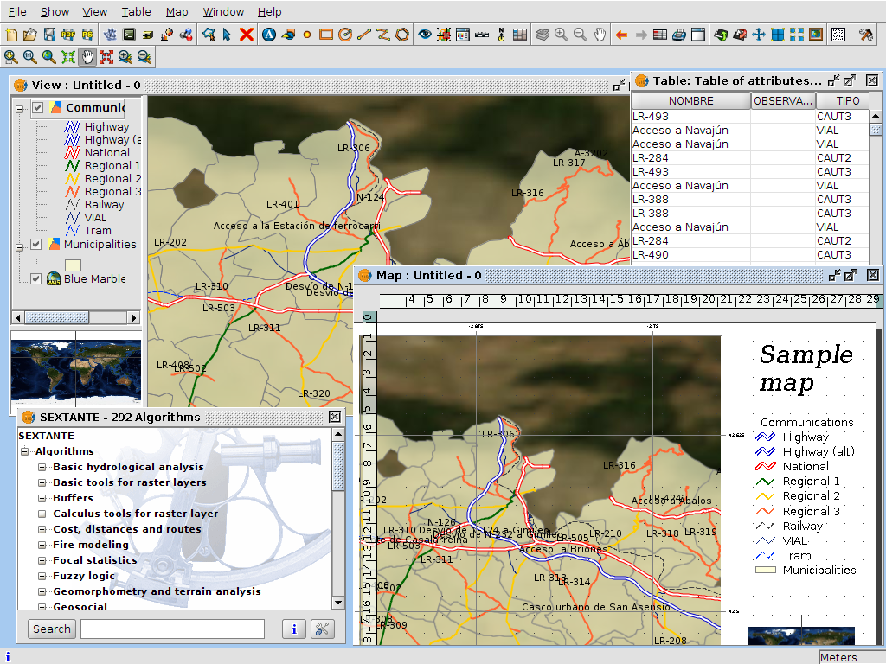

gvSIG Desktop 2.0
Novedades y motivaciones
Jorge Sanz
- Trabajo en Prodevelop
- @xurxosanz
- Participo en:
- Escribo en:

¿Qué es gvSIG?
- Aplicaciones: gvSIG Desktop , Mobile y Mini
- Proyecto de software libre: http://gvsig.org
- Asociación gvSIG: http://gvsig.com
¿Qué es gvSIG Desktop?
¿Qué era gvSIG Desktop en 2008?
Producto:
- maduro
- grande
- difícil de mantener
- Alta complejidad
- Alto acoplamiento
- Pequeños cambios = alto impacto
¿Cómo solucionar esto?
Refactorización grande
Refactorización de gvSIG
- El acceso a datos: el motor de gvSIG
- Creación de nuevas APIs
- Separación estricta de API e implementación
- Capa de compatibilidad para gvSIG Mobile
- Mucho más costosa de lo esperado
Ventajas de la nueva arquitectura
- Corrección de errores
- Versiones más frecuentes
-
Menos impacto
= menor tiempo de desarrollo
= menor coste - Nuevas aplicaciones
No solo una refactorización
- Reestructuración del sistema de construcción: maven
- Nuevas funcionalidades
Maven
Pantallazo de sitio maven
Funcionalidades
| Algunos ejemplos.... | 1.12 | 2.0 |
|---|---|---|
| Leyenda tartas y barras | X | |
| Tabla en mapa | X | |
| Importar/exportar símbolos | X | |
| Administrador complementos | - | X |
| CSV | X | |
| NETCDF | X | |
| Datos multitemporales | X | |
| Metadata management | X | |
| Network analysis | X | |
| WMTS | X | |
| Raster tile cache | X |
Nuevo instalador
Gestor de complementos
Scripting
Mejoras en raster
- Refactorización 2.0
- Cache de datos raster en teselas
- Visualización en teselas
- Reproyeccíón
- Nuevos servicios: OSM/WMTS/PostGIS Raster/NetCDF
- Mejoras en InfoByPoint y gestión de ROIs
Gráficas
¿Dónde estamos ahora?
- gvSIG 2.0 ya
¡Muchas Gracias!
gvSIG Desktop 2.0
Nuevas funcionalidades
Referencias
Fotografías
, , , , , , , succes kid

Esta obra está bajo una Licencia Creative Commons Atribución-NoComercial-CompartirIgual 3.0 Unported.